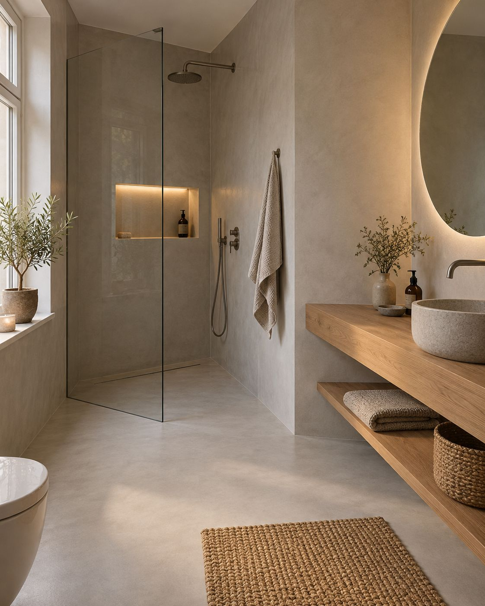
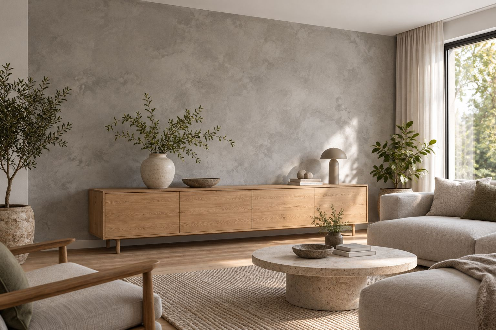

das bad ohne fugen.
Eine Fläche statt hunderter Fugen. Ziehen Sie den Schieber und sehen Sie den Unterschied.
fliesen oder fugenlos?
Ziehen Sie den Schieber. Links die typische Badwand mit Fugen, die mit den Jahren dunkel werden. Rechts dieselbe Wand fugenlos gespachtelt: eine Fläche, nichts, wo sich Schmutz festsetzt.
- Keine Fugen, kein Schimmel darin
- Wischen statt schrubben
- Oft ohne Fliesen abzuschlagen (Beispiel)
mit Fugenfugenlos


so läuft es ab
Wir schauen uns Ihr Bad an und prüfen den Untergrund. Dann zeigen wir Ihnen Muster in Farbe und Struktur. Gespachtelt wird in mehreren Schichten, am Ende kommt die Versiegelung. Wie lange es dauert und was es kostet, wissen Sie vorher. (Ablauf: Beispiel)